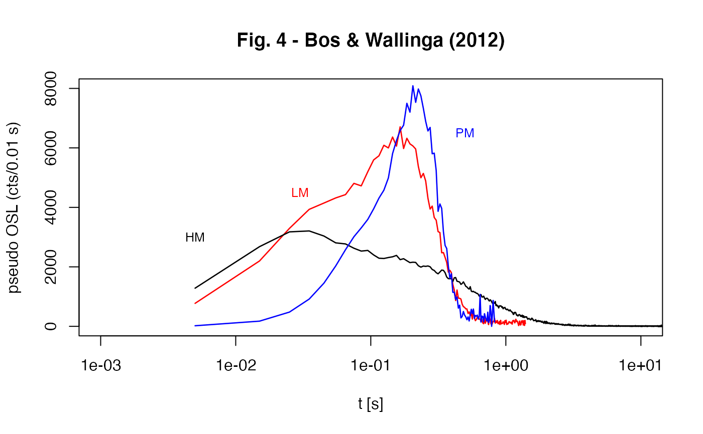

R/CW2pPMi.R
CW2pPMi.RdTransforms a conventionally measured continuous-wave (CW) OSL-curve into a pseudo parabolic modulated (pPM) curve under parabolic modulation conditions using the interpolation procedure described by Bos & Wallinga (2012).
CW2pPMi(values, P)RLum.Data.Curve or data.frame (required):
RLum.Data.Curve or data.frame with measured curve data of type
stimulation time (t) (values[,1]) and measured counts (cts) (values[,2])
vector (optional): stimulation period in seconds. If no value is given, the optimal value is estimated automatically (see details). Greater values of P produce more points in the rising tail of the curve.
The function returns the same data type as the input data type with the transformed curve values.
RLum.Data.Curve
$CW2pPMi.x.t | : transformed time values |
$CW2pPMi.method | : used method for the production of the new data points |
data.frame
$x | : time |
$y.t | : transformed count values |
$x.t | : transformed time values |
$method | : used method for the production of the new data points |
The complete procedure of the transformation is given in Bos & Wallinga
(2012). The input data.frame consists of two columns: time (t) and
count values (CW(t))
Nomenclature
P = stimulation time (s)
1/P = stimulation rate (1/s)
Internal transformation steps
(1) log(CW-OSL) values
(2) Calculate t' which is the transformed time: $$t' = (1/3)*(1/P^2)t^3$$
(3)
Interpolate CW(t'), i.e. use the log(CW(t)) to obtain the count values for
the transformed time (t'). Values beyond min(t) and max(t)
produce NA values.
(4)
Select all values for t' < min(t), i.e. values beyond the time resolution
of t. Select the first two values of the transformed data set which contain
no NA values and use these values for a linear fit using lm.
(5)
Extrapolate values for t' < min(t) based on the previously obtained
fit parameters. The extrapolation is limited to two values. Other values at
the beginning of the transformed curve are set to 0.
(6) Transform values using $$pLM(t) = t^2/P^2*CW(t')$$
(7)
Combine all values and truncate all values for t' > max(t)
NOTE:
The number of values for t' < min(t) depends on the stimulation
period P. To avoid the production of too many artificial data at the
raising tail of the determined pPM curve, it is recommended to use the
automatic estimation routine for P, i.e. provide no value for
P.
According to Bos & Wallinga (2012), the number of extrapolated points
should be limited to avoid artificial intensity data. If P is
provided manually, not more than two points are extrapolated.
0.2.1
Kreutzer, S., 2024. CW2pPMi(): Transform a CW-OSL curve into a pPM-OSL curve via interpolation under parabolic modulation conditions. Function version 0.2.1. In: Kreutzer, S., Burow, C., Dietze, M., Fuchs, M.C., Schmidt, C., Fischer, M., Friedrich, J., Mercier, N., Philippe, A., Riedesel, S., Autzen, M., Mittelstrass, D., Gray, H.J., Galharret, J., 2024. Luminescence: Comprehensive Luminescence Dating Data Analysis. R package version 0.9.24.9000-106. https://CRAN.R-project.org/package=Luminescence
Bos, A.J.J. & Wallinga, J., 2012. How to visualize quartz OSL signal components. Radiation Measurements, 47, 752-758.
Further Reading
Bulur, E., 1996. An Alternative Technique For Optically Stimulated Luminescence (OSL) Experiment. Radiation Measurements, 26, 701-709.
Bulur, E., 2000. A simple transformation for converting CW-OSL curves to LM-OSL curves. Radiation Measurements, 32, 141-145.
##(1)
##load CW-OSL curve data
data(ExampleData.CW_OSL_Curve, envir = environment())
##transform values
values.transformed <- CW2pPMi(ExampleData.CW_OSL_Curve)
#> Warning: t' is beyond the time resolution. Only two data points have been extrapolated, the first 0 points have been set to 0!
##plot
plot(values.transformed$x,values.transformed$y.t, log = "x")
##(2) - produce Fig. 4 from Bos & Wallinga (2012)
##load data
data(ExampleData.CW_OSL_Curve, envir = environment())
values <- CW_Curve.BosWallinga2012
##open plot area
plot(NA, NA,
xlim = c(0.001,10),
ylim = c(0,8000),
ylab = "pseudo OSL (cts/0.01 s)",
xlab = "t [s]",
log = "x",
main = "Fig. 4 - Bos & Wallinga (2012)")
values.t <- CW2pLMi(values, P = 1/20)
lines(values[1:length(values.t[,1]),1],CW2pLMi(values, P = 1/20)[,2],
col = "red",lwd = 1.3)
text(0.03,4500,"LM", col = "red", cex = .8)
values.t <- CW2pHMi(values, delta = 40)
#> Warning: 56 values have been found and replaced the mean of the nearest values.
lines(values[1:length(values.t[,1]),1], CW2pHMi(values, delta = 40)[,2],
col = "black", lwd = 1.3)
#> Warning: 56 values have been found and replaced the mean of the nearest values.
text(0.005,3000,"HM", cex = .8)
values.t <- CW2pPMi(values, P = 1/10)
#> Warning: t' is beyond the time resolution. Only two data points have been extrapolated, the first 3 points have been set to 0!
lines(values[1:length(values.t[,1]),1], CW2pPMi(values, P = 1/10)[,2],
col = "blue", lwd = 1.3)
#> Warning: t' is beyond the time resolution. Only two data points have been extrapolated, the first 3 points have been set to 0!
text(0.5,6500,"PM", col = "blue", cex = .8)
